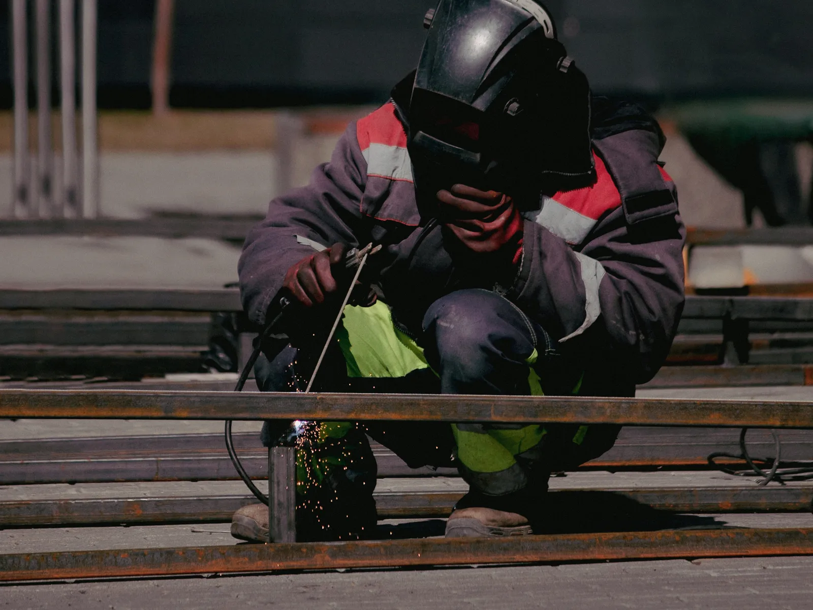

Home · Service Areas · Hammond
Mobile Welders in Hammond, LA
At Big Easy Mobile Welders, we weld on site for Hammond homeowners, property managers and businesses, from broken gates and loose railings to custom steel, aluminum and stainless pieces. Our licensed, insured welders arrive with a fully equipped mobile unit and complete the work at your property.

We come to the jobWhat Is Part of Every Mobile Welding Job in Hammond?
Every mobile welding job in Hammond includes a free estimate with no obligation, an experienced, licensed and insured welder, a fully equipped mobile unit at your door and metal prep with brushes and grinders. We finish by reviewing the completed weld with you, with easy payment and follow-up support.
An Estimate That Costs Nothing
We inspect the metal and quote the work free of charge, with clear pricing and nothing hidden.
Welders With Two Decades In
Licensed, insured and highly trained welders take your job, with more than 20 years of experience to draw on.
We Bring the Equipment
A fully equipped mobile unit brings everything to your home or business.
Clean Metal First
Rust, flaking paint and scale come off with brushes and grinders before the first bead goes down.
From Small Fixes to Fabrication
We repair and fabricate in mild steel, aluminum and stainless steel, whether the piece is small or large.
Wrap-Up and Support
You walk the finished job with us, pay through easy options and can reach us for follow-up support.

Why Do Property Owners in Hammond Call a Mobile Welder?
People in Hammond call a mobile welder when a metal fixture fails and it is easier to bring the welder than move the metal. Property managers need loose stair railings and security gates secured, homeowners want sagging gates and rusted fences repaired, and businesses ask for brackets, frames and trailer repairs.
- Loose Stair Railing at a Rental
- Security Gate That Will Not Close
- Fence Post Rusted Through
- Sagging Swing Gate
- Cracked Utility Trailer Frame
- Broken Steel Handrail
- Damaged Equipment Bracket
- Custom Frame for a Business
- Storm-Damaged Fencing
Which Welding Services Do Hammond Customers Use Most?
Hammond customers use our custom, gate, fence, iron railing, pipe and arc welding, plus window frame repair, specialized mobile jobs and metal fabrication. Every service is performed on site by our mobile welders, and each one starts with a free, no-obligation estimate.

Pipe Welding
Pipe and pipeline repair on site, with stick and gas-shielded processes matched to the pipe.
View pipe welding →
Fence Welding
Fence repairs and custom fence fabrication, with the material and process chosen for your fence.
View fence welding →
Gate Welding
Gate repairs and custom gates in steel or aluminum, with materials and tools covered in your estimate.
View gate welding →
Iron Railing Welding
Custom indoor and outdoor railings for stairways, decks and balconies, built to fit your property.
View railing welding →
Arc Welding
Shielded and non-shielded arc welding for commercial and residential customers.
View arc welding →
Custom Welding
Custom ironwork, estimated before we start so we arrive with the right equipment for the job.
View custom welding →
How Can You Tell You Need a Welder in Hammond?
You can tell you need a welder in Hammond when metal shifts, separates or corrodes where it is joined. A gate that drops, a handrail that moves under your hand or a crack along an old weld is a cue to act early, before a small joint repair grows into replacing a whole section.
Loose Under Load
A handrail that flexes when you lean on it, or a gate that sinks when opened, usually points to a broken weld or a weakened post.
Visible Separation
A seam that has opened along a weld or bracket is under stress. Fixing it early can keep the surrounding metal sound.
Pitting and Scaling
Rust that pits the surface or lifts in layers is eating into the steel, and that section may need replacing before it is welded.
What Makes Welding in Hammond Different?
Welding in Hammond reflects a university town and commercial hub where Interstates 55 and 12 meet. Fewer than half of homes are owner-occupied, so rental housing and commercial property sit alongside detached homes, and each brings its own stair railings, security gates, fences and steel frames that need repair over time.

Census figures and the city's role in its parish shape the welding work we see in Hammond.
- Renters Outnumber Owners.The Census Bureau's 2020 to 2024 American Community Survey counts 46.0 percent of occupied Hammond homes as owner-occupied, so most households rent.
- Just Over Half Detached.The same survey counts 55.8 percent of Hammond housing units as single-family detached homes, with the rest split among other housing types.
- Old Downtown, Newer Homes.About 15.2 percent of Hammond homes were built in 2010 or later, while downtown keeps its early brick commercial buildings.
- Home to Southeastern.Southeastern Louisiana University is based in Hammond. Railings at busy rentals and businesses take daily wear, and our guide on how to stop welds from cracking explains what repeated stress does to a joint.

What Does a Local Mobile Welder Offer Hammond Customers?
A local mobile welder offers Hammond customers on-site repairs, usually without taking anything apart or hauling it away. You work with a locally owned company with years of service across the New Orleans area, and pricing starts with a free, no-obligation estimate with no hidden fees. Help stays a phone call away afterward.
Local Ownership
We are a locally owned welding company with many years of service around New Orleans and nearby cities.
Welding Gear on Board
Fully equipped mobile units bring machines and tools to your site for repairs in place.
Licensed and Insured
Highly trained welders who are licensed and insured handle residential and commercial work.
No Surprises on Price
Free estimates, transparent pricing with no hidden fees and easy ways to pay.
What Happens During a Mobile Welding Job in Hammond?
During a mobile welding job in Hammond, four things happen in order. You request a free estimate, you approve the quote and pick a weekday slot, our welder preps the metal and welds it on site, and we walk you through the result with follow-up support available afterward.
Send the Details
Call (504) 370-2757 or use our online form to describe what broke and where it is.
Book a Weekday Visit
After you approve the price, choose a time from 8 AM to 3 PM, Monday through Friday.
Weld It in Place
Our welder arrives with the mobile unit, cleans the joint and makes the repair at your property.
Walk the Job Together
We show you the completed weld and remain reachable for any follow-up you need.
 The rig comes to you
The rig comes to youWhich Decisions Come Before Calling a Welder in Hammond?
Before calling a welder in Hammond, decide what you want the finished piece to do and gather the basics: the metal type, how badly it is damaged and how the welder can reach it. Property managers should also confirm access with tenants. Those details let us give an accurate quote and arrive equipped.
Steel or Aluminum?
Steel and aluminum behave very differently under the torch. Our comparison of aluminum vs. steel welding explains the tradeoffs.
Access and Permission
Open gates, move vehicles and, at rentals, let tenants know when we are coming.
Repair or Replace
Tell us whether you want the existing piece repaired or a new one fabricated, since each is scoped differently.
Which Other Cities Near Hammond Do Our Welders Cover?
From Hammond, our welders cover Baton Rouge to the west, Covington, Madisonville, Mandeville and Slidell to the east, and LaPlace, St. Rose, Kenner, Metairie, Gretna and New Orleans to the south. The same licensed welders and fully equipped mobile units serve each of those cities, and every estimate is free with no obligation.
- New Orleans
- Metairie
- Kenner
- Gretna
- St. Rose
- LaPlace
- Slidell
- Mandeville
- Covington
- Madisonville
- Hammond
- Baton Rouge
Not sure we cover your street?
Request a free estimate or call us, and we will confirm before we book the job.
Where Our Rigs Roll
Schematic, not to scale. New Orleans and the 11 nearby cities we serve.
About Hammond
Hammond is a city in Tangipahoa Parish, set where Interstates 55 and 12 meet.
The Parish's Commercial Hub
The Tangipahoa Parish tourism office calls Hammond the parish's commercial hub. Amite, not Hammond, is the parish seat.
Population and Land
The 2020 Census counted 19,584 people in Hammond, compared with 20,019 in 2010, on about 14 square miles of land.
Built Along the Railroad
The railroad reached Hammond in 1854, and the brick buildings early merchants raised downtown still stand, per the Hammond Historic District.
Things To Do
Downtown Hammond is the center of its arts scene, with a historic theatre and an arts center on East Thomas Street.
Columbia Theatre
Established in 1928 and renovated in 2002, the theatre at 220 E. Thomas Street is owned and run by Southeastern Louisiana University and seats 830 in Hainkel Hall.
Hammond Regional Arts Center
At 217 E. Thomas Street, the center is home to local visual, literary and performing artists from across Tangipahoa Parish.
Hammond Square
The parish tourism office lists Hammond Square on Palace Drive among local attractions, with restaurants and retailers in one place.
Nearby Suburbs
Hammond sits on the northern edge of our service area, with neighbors to the west, east and south.
Baton Rouge
Louisiana's capital city lies west of Hammond and counted 227,470 residents in the 2020 Census.
Covington
To the east, Covington is a city of 11,564 people as of the 2020 Census.
LaPlace
South of Hammond, LaPlace is home to the St. John the Baptist Parish government offices and 28,841 residents.
Interesting and Fun Facts
A few facts about Hammond and its parish, from the city's founders to the meaning of the parish name.
Founded and Developed
The parish tourism office credits Peter Hammond with founding the city that bears his name and Charles Cate with developing it.
What Tangipahoa Means
According to the parish tourism office, Tangipahoa means "ear of corn" or "those who gather corn," a reference to a sub-tribe of the Acolapissa.
A Parish Since 1869
Tangipahoa Parish's boundaries were fixed by law in March 1869, after railroad construction in the mid-1800s spurred development.
Public Transportation
Hammond riders can use city bus routes run with Tangipahoa Parish, plus a parish-wide ride service booked a day ahead.
- Hammond city bus: fixed routes inside Hammond city limits, run with the city through the Tangipahoa Voluntary Council on Aging.
- City bus hours: Monday through Friday, 8:00 AM to 4:00 PM.
- Demand response rides: anyone can call 24 hours ahead to schedule a ride within Tangipahoa Parish.
- Senior rides: weekday curb-to-curb vans bring seniors to the parish's five senior centers.
- Route information: the City of Hammond directs riders to call 985-748-6016 for current routes, stops and schedules.
Who Do Hammond Customers Contact for a Free Welding Estimate?
Hammond customers get a free welding estimate by calling (504) 370-2757 or filling out our online form. Let us know what needs welding, what metal it is and where it sits on the property, and we send back a transparent, no-obligation quote before any work is scheduled.
Loading the estimate form...
If it does not appear, call us at (504) 370-2757.

What Welding Questions Do Hammond Residents Bring Us?
Hammond residents often ask about repairing farm gates, dumpster enclosure gates and apartment stair railings, whether a broken weld can be rewelded, how to weld safely near a gas meter or with tenants home, whether welding weakens metal and what Hammond is known for.
Can a welder repair a pipe farm gate?
Pipe farm gates can usually be repaired by rewelding cracked joints, straightening bent rails and replacing damaged hinge parts. A gate that hangs low often has a worn hinge or a leaning post. Because pipe gates swing in all weather, the repaired spots should be primed and painted.
Can a welder repair a dumpster enclosure gate?
Dumpster enclosure gates take regular knocks, and their bent frames, broken hinges and cracked welds can usually be repaired on site. Heavier hinges or added bracing may help a gate that keeps failing. The posts should be checked as well, since a loose post lets the gate sag and drag.
Can a welder repair a stair railing at an apartment building?
A welder can usually repair apartment stair railings in place, fixing loose posts, cracked joints and rusted balusters. Shared stairs stay in use, so the work is often planned to keep a safe path open. Badly corroded sections may be replaced with new rail fabricated to match.
Can a broken weld be rewelded?
A broken weld can usually be rewelded once the old weld is ground out and the joint cleaned back to solid metal. Simply welding over a cracked bead often fails again. If the joint broke because it was undersized or overloaded, the repair may also need a stronger design or added bracing.
Is it safe to weld near a gas meter?
Welding near a gas meter or line calls for extra caution, because sparks and heat can damage fittings or ignite a leak. Welders keep a safe distance, shield nearby equipment and check the area first, and work right beside a meter may involve the gas utility.
Can a welder work while tenants are home?
Welding can usually go ahead while tenants are home, as long as they stay clear of the work area, keep pets inside and close nearby windows against fumes. The welder blocks off the space, and notice ahead of time keeps access smooth.
Does welding weaken metal?
Welding can weaken metal near the joint if it overheats the area or is done poorly, because heat changes the metal's structure in the heat-affected zone. A correctly sized weld with the right filler and heat input is usually as strong as the base metal. Some hardened steels and aluminum alloys lose strength more easily.
What is Hammond, Louisiana known for?
Hammond is known as the commercial hub of Tangipahoa Parish and the home of Southeastern Louisiana University, according to the parish tourism office. The city sits where Interstates 55 and 12 meet, and its downtown holds the Columbia Theatre, which dates to 1928.


Book Your Free Mobile Welding Estimate
Tell us what needs welding, and we will bring the rig to your door anywhere in the New Orleans area.